PROJECT / 01
Halo
Shellhacks 2026
A smart bike helmet that detects approaching vehicles and alerts the rider.
Raspberry Pi, Arduino, cameras, and ultrasonic sensors power the prototype.
Hello, world. I’m
Statistics major at the
University of Central Florida
Click to contribute. Or focus the plot, use arrow keys, then press Enter.
Connecting to the distribution…
01 / SELECTED WORK
Ideas, explored through data.
Smart helmet · Onboard computing and sensors
PROJECT / 01
Shellhacks 2026
A smart bike helmet that detects approaching vehicles and alerts the rider.
Raspberry Pi, Arduino, cameras, and ultrasonic sensors power the prototype.
02 / THE PERSON BEHIND THE POINTS
Still learning. Always sampling.I’m Sion, a senior statistics major at the University of Central Florida, passionate about statistics and data analytics.
My journey, interests, and what comes next!
I transferred to UCF after getting my AA from Jacksonville's community college, FSCJ. My AA only took a year for me to complete since I had AP credits from high school, so after that year I took a gap year. I worked a lot, had a lot of fun making music, and even traveled to Spain and London during this time!
I'm into a lot of different things including music/producing, manga, video games, horror movies, the list goes on and on. I'm a big nerd so growing up I loved Nintendo and Sega games, so I was big into Mario, Sonic, Legend of Zelda, and Kirby. My love for horror stems from reading a lot of creepypastas as a kid. I also used to watch a lot of anime, some of my favorites being JJBA, Hunter x Hunter, Re:Zero, and Gurren Lagann.
I have been working on expanding my skills in data science and machine learning, since I have been considering pursuing a Master's degree at UCF after Fall 2027. I'm looking forward to developing my skills and maybe even branching out from analytics to web design and software engineering.